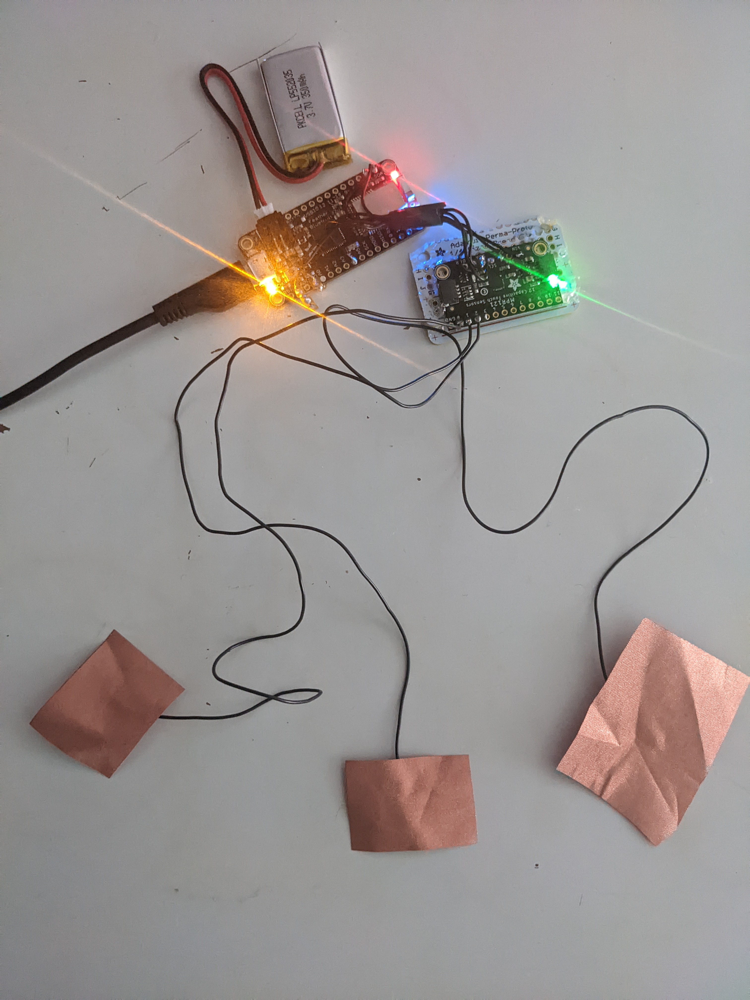

My final project will be a soft MIDI board. The goal of the work is to experiment with how using fabrics and textiles as a musical instrument can create a unique experience and output compared to the standard plastic/metal options. Bluetooth functionality is also available for the board so it does not need to be plugged into the computer. The result is a interactive textile that can with any digital audio workstation(DAW).
The soft MIDI is composed of a series of different swatches. Each swatch represent different forms of controller data and notes that will translate to sounds within a DAW. this may include samples, drums, clips, and various other types of audio. inputs can be customizable and configured to fit the wearer’s musical style or preference.
The goal of my project to to experiment with how different emotions and feelings can be brought out of the process of creating music depending on the feeling of the instrument. Traditionally MIDI boards are built similarly to the way most other consumer electronic are. Maybe it can be put on a wall or on a body.
For this project you will need version 1.6+ of the Arduino IDE with the Adafruit Arduino Board Manager added to your preferences. There are many tutorials online which cover how to do this.
This software is a virtual loopback MIDI cable for Windows machines 7, 10, and 11. You will need this in order to create virtual loopback MIDI-ports to interconnect applications on Windows that want to open hardware MIDI ports for communication.
MIDIberry allows a Bluetooth device to send MIDI signals from INPUT to OUTPUT, between MIDI devices. This software is what will allow notes to be played in the DAW via the microcontroller. This must run after LoopMIDI has already started running.
In order to actually create music on one’s computer you may need a DAW( Digital Audio Workstation). Ableton Live is designed to be an instrument for live performances as well as a tool for composing, recording, arranging, mixing, and mastering. It also allows beatmatching, crossfading, and a wide range of other effects. The board will be played through this software.
The circuit diagram shared in the earlier section displays how the microcontroller and capacitive touch sensors should be wired into the piece. Make sure that the microcontroller and touch sensor are wired and functioning correctly through tests before sewing them into the board. Otherwise you will either have to troubleshoot them attached to the board or remove them and re-sew.
Depending on exactly where you sew in your microcontroller, you will need to make sure that your silicon wire is measured and is long enough to reach where you will be placing your swatch buttons. Because soldering on wires can be somewhat fragile, it is important that you handle with care and sew the wires into the object as well so that they aren’t loose and at risk of potentially being ripped apart. Masking tape also comes in handy to ensure everything stays in place while being modified.
Once you have securely sewn all of the necessary wires into the board, now cut a small hole within the square of where the swatch buttons will be and stick the wire through the hole from the inside of the board to the outside. Do this for each button/wire combination. Once you have the head of each wire on the outside of the board use the copper tape to attach a small cutout square of copper taffeta fabric onto exposed wire. This will allow the capacitive touch sensor to recognize the capper taffeta as a touchpad.
At this point you can now begin to sew your swatches onto each square which will cover the copper taffeta pads. The copper tape can be pulled off so make sure that it is firmly stuck to the wire before sewing. Ultimately where the squares are placed and what swatches to use is up to one’s personal preference as long as everything is wired correctly.
I’ve placed one LED at the top part of the board. it is connected to two arbitrary digital/analog pins and ground. You can place your LEDs wherever you like as long as there is a resistor connected to ground as well. Also, I used NeoPixel RGBW LEDs but you can connect any LED of your choice. I would have liked to have added many lights if more time was permitted
Access code on Github here
The notes range from C4 to B4